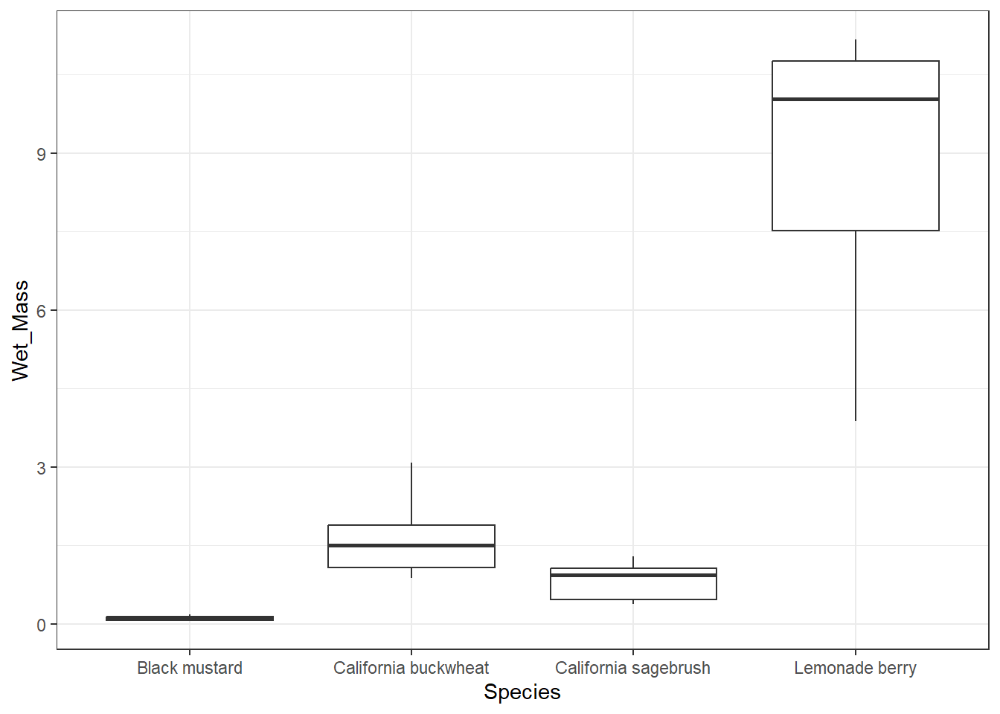

Warning: package 'tidyverse' was built under R version 4.5.3
Warning: package 'tidyr' was built under R version 4.5.3
Warning: package 'dplyr' was built under R version 4.5.3
── Attaching core tidyverse packages ──────────────────────── tidyverse 2.0.0 ──
✔ dplyr 1.2.1 ✔ readr 2.1.5
✔ forcats 1.0.0 ✔ stringr 1.5.2
✔ ggplot2 4.0.0 ✔ tibble 3.3.0
✔ lubridate 1.9.4 ✔ tidyr 1.3.2
✔ purrr 1.1.0
── Conflicts ────────────────────────────────────────── tidyverse_conflicts() ──
✖ dplyr::filter() masks stats::filter()
✖ dplyr::lag() masks stats::lag()
ℹ Use the conflicted package (<http://conflicted.r-lib.org/>) to force all conflicts to become errors
library(readxl)library(dplyr)library(lme4)
Loading required package: Matrix
Attaching package: 'Matrix'
The following objects are masked from 'package:tidyr':
expand, pack, unpack
library(lmerTest)
Warning: package 'lmerTest' was built under R version 4.5.2
Attaching package: 'lmerTest'
The following object is masked from 'package:lme4':
lmer
The following object is masked from 'package:stats':
step
library(ggpubr)
Warning: package 'ggpubr' was built under R version 4.5.3
IGNITE_Data_Sheet <-read_excel("IGNITE Data Sheet.xlsx", sheet ="RCoding")
Data is already really clean, will save the chunk below in case of data cleaning
#data cleaning here!#There is one reading of black mustard that is 600 FMC, will take that outIGNITE_Data_Sheet_2 <- IGNITE_Data_Sheet |>filter( FMC <500) |>mutate(Site =as.factor(Site))
Exploratory Data Graphing
ggplot(IGNITE_Data_Sheet_2) +aes(x = Species, y = FMC, fill =as.factor(Site)) +geom_col()+scale_fill_brewer(palette ="Set2")+theme_bw()
ggplot(IGNITE_Data_Sheet_2)+aes(x = Species, y = Wet_Mass)+geom_boxplot()+theme_bw()

ggplot(IGNITE_Data_Sheet_2)+aes(x = Species, y = Dry_Mass)+geom_boxplot()+theme_bw()
In this very rough estimate you can see that our buckwheat had the highest combined FMC for the first sampling event
We need to collect alot more of each species, 2 inches from four sides of the plant (8 inches total) is not enough (except for lemonade berry
Sagebrush dried the most between wet and dry weight
`summarise()` has regrouped the output.
ℹ Summaries were computed grouped by Species and Site.
ℹ Output is grouped by Species.
ℹ Use `summarise(.groups = "drop_last")` to silence this message.
ℹ Use `summarise(.by = c(Species, Site))` for per-operation grouping
(`?dplyr::dplyr_by`) instead.